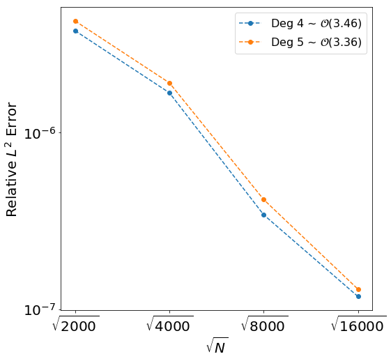
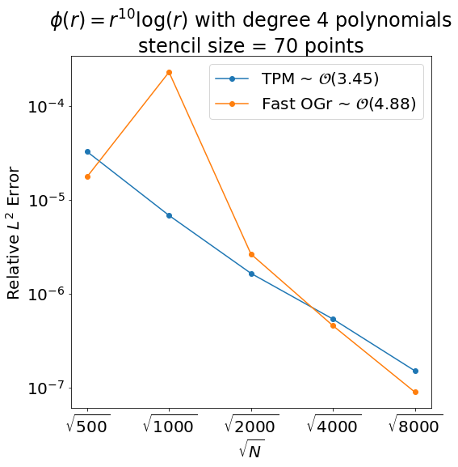
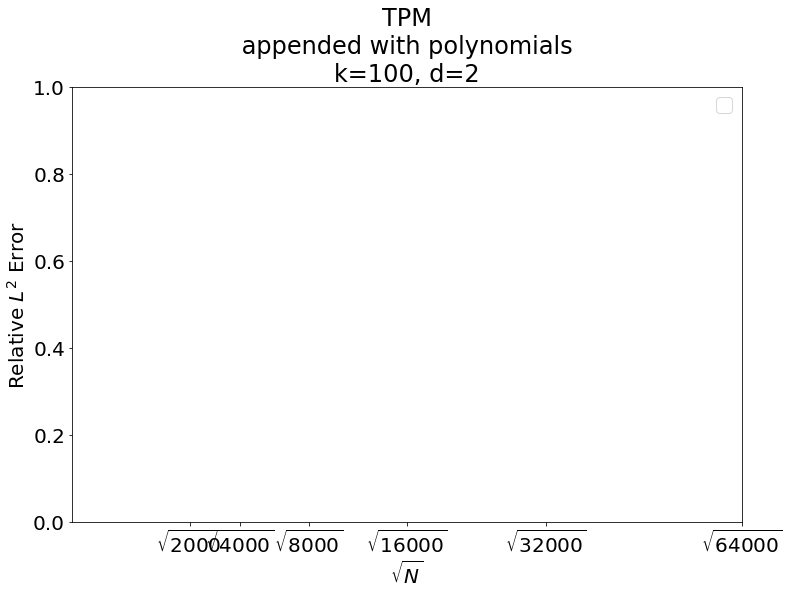
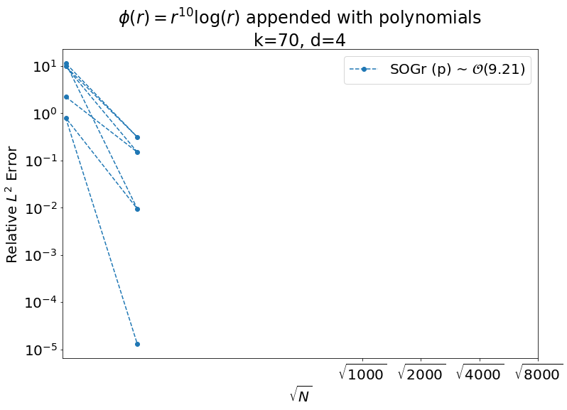
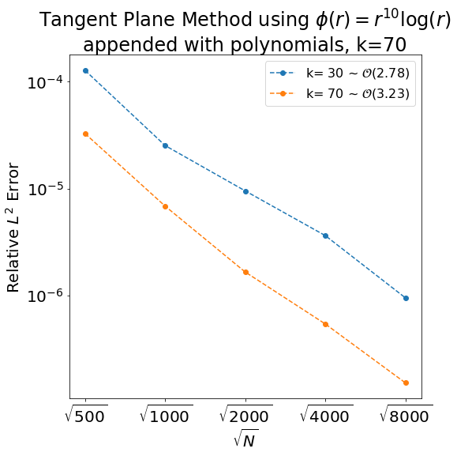
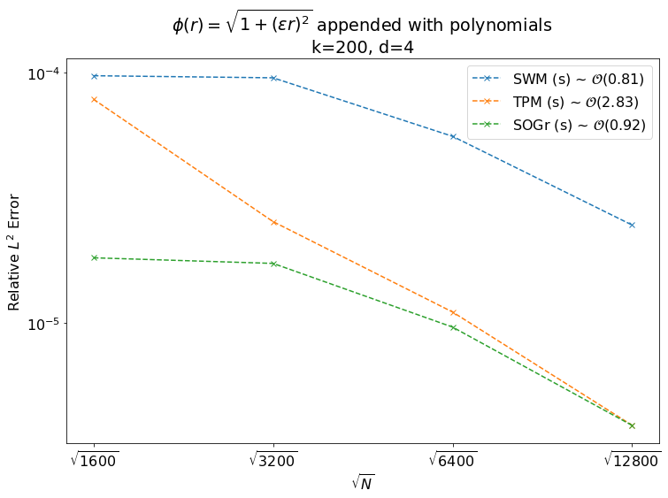
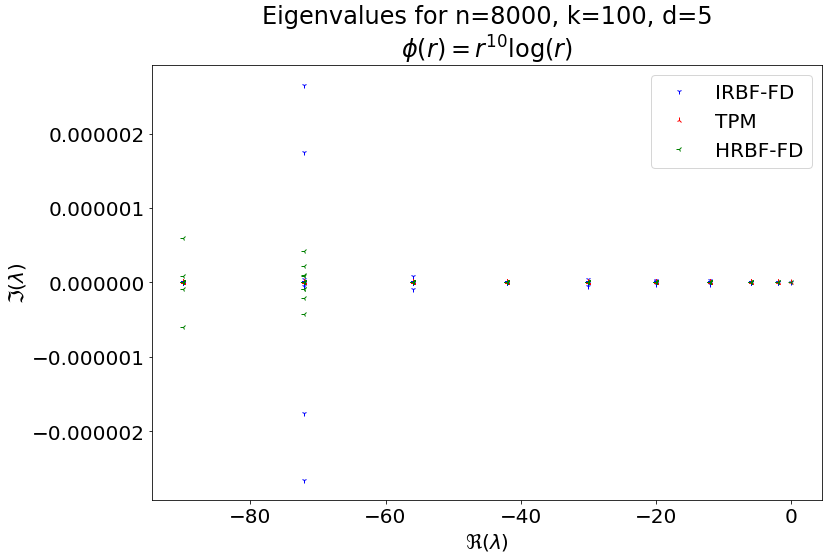

%matplotlib inline
import matplotlib.pyplot as plt
import matplotlib
import numpy as np
from numpy.linalg import cond, norm, inv
import pandas as pd
from scipy.stats import linregress as linreg
import scipy.sparse.linalg as spla
from scipy.sparse import csr_matrix
import scipy
import pickle
import os.path
import itertools
from poly_basis import *
from rbf import *
from spherepts import *
from torus_points import *
from laplacebeltrami import *
from ex006_helpers import *Parameters
matplotlib.rcParams.update({'font.size': 20})method_abrv = {'SWM': 'IRBF-FD', 'TPM': 'TPM', 'SOGr': 'Fast OGr'}if True: # sphere
surface = 'S'
# node_sets = ['spiral', 'sym_t_design', 'min_energy', 'max_det', 'icos']
# node_sets = ['icos', 'spiral']
node_sets = ['min_energy']
# foo, exact = get_exact('gaussians')
foo, exact = get_exact(30)
else: # torus
surface = 'T'
node_sets = ['phyllotaxis']
methods = ['SWM', 'TPM', 'SOGr']
# methods = ['TPM', 'SOGr']
# methods = ['SOGr']
# ns = [500* 2**i for i in range(2,8)]
# ns = [2000 * 2**i for i in range(0, 6)]
ns = [1000 * 2**i for i in range(1)]
# ns = [100]
# ns = [25600]
# stencil_sizes = [10 * 2**i for i in range(7)] #+ [800]
stencil_sizes = [168]
# stencil_sizes = [30, 70]
# rbfs = ['multiquadric', 'r^10 log(r)', 'gaussian', 'r^9']
# rbfs = ['r^8 log(r)', 'r^10 log(r)', 'r^12 log(r)', 'r^14 log(r)', 'r^14 log(r)', 'r^16 log(r)', 'r^18 log(r)']
# rbfs = ['r^9', 'r^11', 'r^13', 'r^15', 'r^17']
# rbfs = ['multiquadric']
# rbfs = ['multiquadric', 'r^9', 'r^10 log(r)']
rbfs = ['r^9']
epsilons = [None]
# epsilons = [1.41984]
#epsilons = [1, .5, .25, .1, .05]
basis_degs = [6] # -1 for no terms
# basis_degs = [0, 2, 4]
# basis_degs = range(-1, 6)
#basis_degs = range(-1,2) # -1 for no terms
basis_types = ['p']
# basis_types = ['p']
rcond = 1e-12
eig_calc = False
problems = ['diff', 'steady', 'time']
problem = problems[1]
# calculate_weights_cond = False
# calculate_stencil_conds = True
# calc_largest_real_eig = True
# Print Specs
sep = 22
print('Methods:'.ljust(sep) + ', '.join(methods))
print('Surface:'.ljust(sep) + surface)
print('Node sets:'.ljust(sep) + ', '.join(node_sets))
print('Total Nodes:'.ljust(sep) + ', '.join([str(n) for n in ns]))
print('Stencil Sizes:'.ljust(sep) + ', '.join([str(k) for k in stencil_sizes]))
print('RBFs:'.ljust(sep) + ', '.join(rbfs))
print('Epsilons:'.ljust(sep) + ', '.join([str(e) for e in epsilons]) )
print('Polynomial Bases:'.ljust(sep) + ', '.join(basis_types))
print('Polynomial Degrees:'.ljust(sep) + ', '.join([str(d) for d in basis_degs]))
print('rcond = %g' % rcond)
trials = 1
trials *= len(methods)
trials *= len(node_sets)
trials *= len(ns)
trials *= len(stencil_sizes)
trials *= len(rbfs)
trials *= len(epsilons)
trials *= len(basis_types)
trials *= len(basis_degs)
print('\nTrials to run: %d' % trials)Harmonic degree: 5
Methods: SWM, TPM, SOGr
Surface: S
Node sets: min_energy
Total Nodes: 1000
Stencil Sizes: 168
RBFs: r^9
Epsilons: None
Polynomial Bases: p
Polynomial Degrees: 6
rcond = 1e-12
Trials to run: 3Generate Data
columns = ['surface', 'nodeset', 'N', 'k', 'method', 'rbf', 'epsilon', 'poly_type', 'deg',
'rel_L2_error', 'max_error', 'Re_eig']
data = pd.DataFrame(columns=columns)
for node_set, n in itertools.product(node_sets, ns):
if surface is 'S':
n_try = n
n, nodes = gen_sphere_nodes(node_set, n_try)
normals = nodes
print('\n' + node_set + ' n=' + str(n))
fs = np.array([foo(node) for node in nodes])
ds = np.array([exact(node) for node in nodes])
elif surface is 'T':
nodes, normals = torus_phyllotaxis_points(n)
print('\n' + node_set + ' n=' + str(n))
fs, ds = torus_forcing(nodes)
for k, rbf in itertools.product(stencil_sizes, rbfs):
print(('\t' + rbf.ljust(14)) + 'k=' + str(k).rjust(4))
rbf_obj = rbf_dict[rbf]
for method in methods:
for poly_type, poly_deg in itertools.product(basis_types, basis_degs):
if method is 'TPM' and poly_type is 's': continue
print('\t ' + method +' ' + poly_type + ' d=' + str(poly_deg).rjust(2))
for eps in epsilons:
if rbf_obj['shape']:
print('\t\t epsilon = %s' % str(eps))
##################################################
# calculate weights and errors
##################################################
if poly_deg is -1:
poly_deg = None
try:
# if True:
C = get_weights(method, surface, node_set, n, k, nodes, normals, rbf_obj,
eps, poly_type, poly_deg, rcond)
if eig_calc:
eig = spla.eigs(C, k=1, which='LR')[0][0].real
else:
eig = None
if problem is 'diff':
rel_error_L2 = la.norm(C@fs - ds)/la.norm(ds)
rel_error_max = np.max(np.abs(C@fs - ds))/np.max(np.abs(ds))
if problem is 'steady':
C.resize((n+1, n+1))
C[:n,n] = np.ones((n, 1))
C[n,:n] = np.ones((1, n))
rhs = np.zeros(n+1)
rhs[:n] = ds
rhs[n] = np.dot(fs, np.ones(n))
xs = spla.spsolve(C, rhs)
rel_error_L2 = la.norm(xs[:n]-fs)/la.norm(fs)
rel_error_max = np.max(np.abs(xs[:n]-fs))/np.max(np.abs(fs))
print('\t\t relative L2 error: %g' % rel_error_L2)
print('\t\t relative Max error: %g' % rel_error_max)
data = data.append(
{'method': method, 'surface': surface,
'nodeset': node_set, 'rbf':rbf, 'epsilon': eps,
'deg': str(poly_deg), 'poly_type' : poly_type,
'N':n, 'k':k,
'max_error': rel_error_max,
'rel_L2_error': rel_error_L2,
'Re_eig' : eig,
}, ignore_index=True)
except:
print('\t\t Failed...')
##################################################
# end calculate weights and errors
##################################################
if not rbf_obj['shape']: break
min_energy n=1000
r^9 k= 168
SWM p d= 6/usr/local/lib/python3.6/dist-packages/scipy/sparse/_index.py:127: SparseEfficiencyWarning: Changing the sparsity structure of a csc_matrix is expensive. lil_matrix is more efficient.
self._set_arrayXarray(i, j, x) relative L2 error: 1.32514e-12
relative Max error: 1.17826e-12
TPM p d= 6
relative L2 error: 5.34976e-05
relative Max error: 6.44842e-05
SOGr p d= 6
relative L2 error: 1.5321e-13
relative Max error: 1.21994e-13Raw Data
if len(data)<20:
display(data)
elif len(data)<50:
display(data[::2])
elif len(data)< 100:
display(data[::7])
elif len(data)< 500:
display(data[::11])
elif len(data)<1000:
display(data[::51])
else:
display(data[:5000:100])| surface | nodeset | N | k | method | rbf | epsilon | poly_type | deg | rel_L2_error | max_error | Re_eig | |
|---|---|---|---|---|---|---|---|---|---|---|---|---|
| 0 | S | spiral | 500 | 30 | TPM | r^10 log(r) | None | p | 4 | 1.275318e-04 | 2.876979e-04 | None |
| 2 | S | spiral | 500 | 70 | TPM | r^10 log(r) | None | p | 4 | 3.266215e-05 | 6.129426e-05 | None |
| 4 | S | spiral | 1000 | 30 | TPM | r^10 log(r) | None | p | 4 | 2.524477e-05 | 6.748855e-05 | None |
| 6 | S | spiral | 1000 | 70 | TPM | r^10 log(r) | None | p | 4 | 6.844412e-06 | 1.447073e-05 | None |
| 8 | S | spiral | 2000 | 30 | TPM | r^10 log(r) | None | p | 4 | 9.503901e-06 | 3.054491e-05 | None |
| 10 | S | spiral | 2000 | 70 | TPM | r^10 log(r) | None | p | 4 | 1.654642e-06 | 3.266268e-06 | None |
| 12 | S | spiral | 4000 | 30 | TPM | r^10 log(r) | None | p | 4 | 3.626457e-06 | 7.388671e-06 | None |
| 14 | S | spiral | 4000 | 70 | TPM | r^10 log(r) | None | p | 4 | 5.401070e-07 | 1.227535e-06 | None |
| 16 | S | spiral | 8000 | 30 | TPM | r^10 log(r) | None | p | 4 | 9.485884e-07 | 2.632414e-06 | None |
| 18 | S | spiral | 8000 | 70 | TPM | r^10 log(r) | None | p | 4 | 1.518456e-07 | 2.921515e-07 | None |
data.to_json()display(data[(data.method=='SWM') & (data.deg=='5')])| surface | nodeset | N | k | method | rbf | epsilon | poly_type | deg | rel_L2_error | max_error | Re_eig | |
|---|---|---|---|---|---|---|---|---|---|---|---|---|
| 1 | S | spiral | 2000 | 100 | SWM | r^10 log(r) | None | p | 5 | 0.000057 | 0.000054 | -6.181586e-08 |
| 7 | S | spiral | 4000 | 100 | SWM | r^10 log(r) | None | p | 5 | 0.000019 | 0.000021 | -6.683869e-08 |
| 13 | S | spiral | 8000 | 100 | SWM | r^10 log(r) | None | p | 5 | 0.000028 | 0.000130 | -1.994939e-07 |
| 19 | S | spiral | 16000 | 100 | SWM | r^10 log(r) | None | p | 5 | 0.000042 | 0.000164 | -4.259407e-07 |
| 25 | S | spiral | 32000 | 100 | SWM | r^10 log(r) | None | p | 5 | 0.000091 | 0.000328 | -2.862222e-08 |
print(my_data.to_html())
print(data.epsilon)
Plots
By Degree - (Method, RBF, polytype, k)
# degs = [str(d) for d in range(0,6)]
rbf = 'r^9'
method = 'SWM'
poly_type = 'p'
k = 100
# Order calculation terms
o_start = 0
o_end = -1
##################################################
rbf_obj = rbf_dict[rbf]
title = ''
if method is 'SWM':
title += 'Projection Method using '
elif method is 'TPM':
title += 'Tangent Plane Method using '
elif method is 'SOGr':
title += 'Hermite RBF-FD using '
rbf_obj = rbf_dict[rbf]
title += '$\phi(r)=$' + rbf_obj['tex']
if poly_type is 'p':
title += '\nappended with polynomials, '
else:
title += '\nappended with spherical harmonics, '
title += ('k=%d' % k)
my_data = data[(data.method==method) & (data.rbf==rbf) & (data.poly_type==poly_type) & (data.k==k)]
fig = plt.figure(figsize=(8,8))
legend = []
for i, deg in enumerate(my_data.deg.unique()):
# for i, deg in enumerate(degs):
plot_data = my_data[my_data.deg==str(deg)]
plt.loglog( np.sqrt(plot_data.N.astype(np.float)),
plot_data.rel_L2_error, marker='o', linestyle='dashed')
order = linreg(np.log(np.sqrt(plot_data.N[o_start:o_end].astype(np.float))),
np.log(plot_data.rel_L2_error[o_start:o_end]))[0]
legend += ['Deg ' + deg + ' ~ $\mathcal{O}(%.2f)$' %(-order)]
# plt.title(title)
plt.legend( legend , prop={'size': 16})
plt.minorticks_off()
plt.xticks(np.sqrt(ns), ['$\sqrt{%d}$' % n for n in ns])
plt.xlabel('$\sqrt{N}$')
plt.ylabel('Relative $L^2$ Error')
plt.show()
By Method - (RBF, d, k)
rbf = 'r^10 log(r)'
d = '4'
k = 70
poly_type = 'p'
# nodeset = 'spiral'
nodeset = data.nodeset.unique()[0]
show_order = True
order_lines = [3, 4]
#highest_N = 32000
# Order calculation terms
o_start = 2
o_end = 20
##################################################
rbf_obj = rbf_dict[rbf]
title = ''
rbf_obj = rbf_dict[rbf]
title = '$\phi(r)=$' + rbf_obj['tex']
title += (' with degree %s polynomials\n' % d)
title += ('stencil size = %d points' % k)
my_data = data[(data.deg==d) & (data.rbf==rbf) & (data.k==k) & (data.nodeset==nodeset)]
# if highest_N is not None:
# my_data = my_data[my_data.N.astype(np.float)<=highest_N]
fig = plt.figure(figsize=(8,8))
legend = []
# for i, method in enumerate(my_data.method.unique()):
for i, method in enumerate(['SWM', 'TPM', 'SOGr']):
for poly_type, linestyle, marker in zip('ps', ['-','--'], 'ox'):
plot_data = my_data[(my_data.method==method) & (my_data.poly_type==poly_type)]
if len(plot_data)<1: continue
plt.loglog( np.sqrt(plot_data.N.astype(np.float)),
plot_data.rel_L2_error, marker='o', linestyle='-')
order = linreg(np.log(np.sqrt(plot_data.N[o_start:o_end].astype(np.float))),
np.log(plot_data.rel_L2_error[o_start:o_end]))[0]
if show_order:
legend += [(method_abrv[method]) + ' ~ $\mathcal{O}(%.2f)$' %(-order)]
else:
legend += [(method_abrv[method])]
#smallest N
# num_N = len(my_data.N.unique())-1
# my_N = min(my_data.N.unique())
# err_high = max(my_data[my_data.N==my_N]['rel_L2_error']) * 1.1
# err_low = min(my_data[my_data.N==my_N]['rel_L2_error']) * .1
# for order, err_start, shift in zip(order_lines, [err_high,err_low], [1.2,.9]):
# err_end = err_start*2**(-(num_N-1)/2*order)
# plt.loglog([np.sqrt(my_N), np.sqrt(my_N*2**(num_N-1))], [err_start, err_end], 'k--')
# plt.text(np.sqrt(my_N*2**(num_N-1)), err_end*shift, '$\mathcal{O}(%d)$'%order)
plt.title(title)
plt.legend( legend )
plt.minorticks_off()
plt.xticks(np.sqrt(ns), ['$\sqrt{%s}$' % n for n in ns])
# plt.xticks(np.sqrt(ns[:num_N+1]), ['$\sqrt{%s}$' % n for n in my_data.N.unique()])
plt.xlabel('$\sqrt{N}$')
plt.ylabel('Relative $L^2$ Error')
plt.show()
By RBF
method = 'TPM'
d = '2'
k = 100
poly_type = 'p'
# omit = ['r^9']
omit = []
# Order calculation terms
o_start = 0
o_end = -1
##################################################
title = method + '\n'
rbf_obj = rbf_dict[rbf]
title += ' appended with polynomials \n'
title += ('k=%d, d=%s' % (k, d))
my_data = data[(data.deg==d) & (data.method==method) & (data.k==k) & (data.poly_type==poly_type)]
for rbf in omit:
my_data = my_data[my_data.rbf!=rbf]
fig = plt.figure(figsize=(12,8))
legend = []
for i, rbf in enumerate(my_data.rbf.unique()):
rbf_obj = rbf_dict[rbf]
plot_data = my_data[(my_data.rbf==rbf)]
if len(plot_data)<1: continue
plt.loglog( np.sqrt(plot_data.N.astype(np.float)),
plot_data.rel_L2_error, marker='o', linestyle='dashed')
order = linreg(np.log(np.sqrt(plot_data.N[o_start:o_end].astype(np.float))),
np.log(plot_data.rel_L2_error[o_start:o_end]))[0]
legend += [rbf_obj['tex'] + ' ~ $\mathcal{O}(%.2f)$' %(-order)]
plt.title(title)
plt.legend( legend )
plt.minorticks_off()
plt.xticks(np.sqrt(ns), ['$\sqrt{%d}$' % n for n in ns])
plt.xlabel('$\sqrt{N}$')
plt.ylabel('Relative $L^2$ Error')
plt.show()
By Stencil Size
method = 'SOGr'
rbf = 'r^10 log(r)'
d = '4'
# Order calculation terms
o_start = 0
o_end = -1
##################################################
rbf_obj = rbf_dict[rbf]
title = ''
rbf_obj = rbf_dict[rbf]
title = '$\phi(r)=$' + rbf_obj['tex']
title += ' appended with polynomials \n'
title += ('k=%d, d=%s' % (k, d))
my_data = data[(data.rbf==rbf) & (data.method==method)]
fig = plt.figure(figsize=(12,8))
legend = []
for deg in my_data.deg.unique():
plot_data = my_data[(my_data.deg==deg)]
if len(plot_data)<1: continue
plt.loglog( np.sqrt(plot_data.k.astype(np.float)),
plot_data.rel_L2_error, 'o--')
order = linreg(np.log(np.sqrt(plot_data.k[o_start:o_end].astype(np.float))),
np.log(plot_data.rel_L2_error[o_start:o_end]))[0]
legend += [method + ' (' + poly_type +')' + ' ~ $\mathcal{O}(%.2f)$' %(-order)]
plt.title(title)
plt.legend( legend )
plt.minorticks_off()
plt.xticks(np.sqrt(ns), ['$\sqrt{%d}$' % n for n in ns])
plt.xlabel('$\sqrt{N}$')
plt.ylabel('Relative $L^2$ Error')
plt.show()
# degs = [str(d) for d in range(0,6)]
rbf = 'r^10 log(r)'
method = 'TPM'
# k = 100
deg = '4'
# Order calculation terms
o_start = 2
o_end = -1
##################################################
rbf_obj = rbf_dict[rbf]
title = ''
if method is 'SWM':
title += 'Projection Method using '
elif method is 'TPM':
title += 'Tangent Plane Method using '
elif method is 'SOGr':
title += 'Hermite RBF-FD using '
rbf_obj = rbf_dict[rbf]
title += '$\phi(r)=$' + rbf_obj['tex']
if poly_type is 'p':
title += '\nappended with polynomials, '
else:
title += '\nappended with spherical harmonics, '
title += ('k=%d' % k)
my_data = data[(data.method==method) & (data.rbf==rbf) & (data.deg==deg)]
fig = plt.figure(figsize=(8,8))
legend = []
for i, k in enumerate(my_data.k.unique()):
# for i, deg in enumerate(degs):
plot_data = my_data[my_data.k==k]
plt.loglog( np.sqrt(plot_data.N.astype(np.float)),
plot_data.rel_L2_error, marker='o', linestyle='dashed')
order = linreg(np.log(np.sqrt(plot_data.N[o_start:o_end].astype(np.float))),
np.log(plot_data.rel_L2_error[o_start:o_end]))[0]
legend += ['k= ' + str(k) + ' ~ $\mathcal{O}(%.2f)$' %(-order)]
plt.title(title)
plt.legend( legend , prop={'size': 16})
plt.minorticks_off()
plt.xticks(np.sqrt(ns), ['$\sqrt{%d}$' % n for n in ns])
plt.xlabel('$\sqrt{N}$')
plt.ylabel('Relative $L^2$ Error')
plt.show()
my_data.k.unique()array([30, 70], dtype=object)Mixing Methods and Rbfs
rbf = 'multiquadric'
d = '4'
k = 200
# Order calculation terms
o_start = 0
o_end = -1
##################################################
rbf_obj = rbf_dict[rbf]
title = ''
rbf_obj = rbf_dict[rbf]
title = '$\phi(r)=$' + rbf_obj['tex']
title += ' appended with polynomials \n'
title += ('k=%d, d=%s' % (k, d))
my_data = data[(data.deg==d) & (data.k==k)]
display(data)
fig = plt.figure(figsize=(12,8))
legend = []
for method in my_data.method.unique():
for rbf in my_data.rbf.unique():
plot_data = my_data[(my_data.method==method) & (my_data.rbf==rbf)]
if len(plot_data)<1: continue
plt.loglog( np.sqrt(plot_data.N.astype(np.float)),
plot_data.rel_L2_error, marker=marker, linestyle=linestyle)
order = linreg(np.log(np.sqrt(plot_data.N[o_start:o_end].astype(np.float))),
np.log(plot_data.rel_L2_error[o_start:o_end]))[0]
legend += [method + ' (' + poly_type +')' + ' ~ $\mathcal{O}(%.2f)$' %(-order)]
plt.title(title)
plt.legend( legend )
plt.minorticks_off()
plt.xticks(np.sqrt(ns), ['$\sqrt{%d}$' % n for n in ns])
plt.xlabel('$\sqrt{N}$')
plt.ylabel('Relative $L^2$ Error')
plt.show()| surface | nodeset | N | k | method | rbf | epsilon | poly_type | deg | rel_L2_error | max_error | Re_eig | |
|---|---|---|---|---|---|---|---|---|---|---|---|---|
| 0 | S | spiral | 1600 | 50 | SWM | multiquadric | None | p | None | 0.000261 | 0.000181 | -5.034726e-05 |
| 1 | S | spiral | 1600 | 50 | SWM | multiquadric | None | p | 0 | 0.000231 | 0.000185 | 3.605425e-13 |
| 2 | S | spiral | 1600 | 50 | SWM | multiquadric | None | p | 1 | 0.000237 | 0.000196 | 1.023626e-12 |
| 3 | S | spiral | 1600 | 50 | SWM | multiquadric | None | p | 2 | 0.000234 | 0.000186 | 1.217385e-14 |
| 4 | S | spiral | 1600 | 50 | SWM | multiquadric | None | p | 3 | 0.000215 | 0.000192 | -1.707361e-12 |
| 5 | S | spiral | 1600 | 50 | SWM | multiquadric | None | p | 4 | 0.000158 | 0.000139 | -1.481110e-11 |
| 6 | S | spiral | 1600 | 50 | TPM | multiquadric | None | p | None | 0.000126 | 0.000103 | -3.412607e-05 |
| 7 | S | spiral | 1600 | 50 | TPM | multiquadric | None | p | 0 | 0.000120 | 0.000114 | -9.221965e-14 |
| 8 | S | spiral | 1600 | 50 | TPM | multiquadric | None | p | 1 | 0.000120 | 0.000110 | -1.412688e-14 |
| 9 | S | spiral | 1600 | 50 | TPM | multiquadric | None | p | 2 | 0.000112 | 0.000091 | -3.736313e-15 |
| 10 | S | spiral | 1600 | 50 | TPM | multiquadric | None | p | 3 | 0.000099 | 0.000085 | 1.354472e-13 |
| 11 | S | spiral | 1600 | 50 | TPM | multiquadric | None | p | 4 | 0.000068 | 0.000056 | -1.842970e-14 |
| 12 | S | spiral | 1600 | 50 | SOGr | multiquadric | None | p | None | 0.000113 | 0.000127 | -2.283338e-05 |
| 13 | S | spiral | 1600 | 50 | SOGr | multiquadric | None | p | 0 | 0.000107 | 0.000137 | -1.518341e-12 |
| 14 | S | spiral | 1600 | 50 | SOGr | multiquadric | None | p | 1 | 0.000109 | 0.000130 | -2.963738e-12 |
| 15 | S | spiral | 1600 | 50 | SOGr | multiquadric | None | p | 2 | 0.000099 | 0.000109 | -2.944756e-12 |
| 16 | S | spiral | 1600 | 50 | SOGr | multiquadric | None | p | 3 | 0.000102 | 0.000092 | -2.886046e-12 |
| 17 | S | spiral | 1600 | 50 | SOGr | multiquadric | None | p | 4 | 0.000076 | 0.000080 | -5.666578e-12 |
| 18 | S | spiral | 1600 | 200 | SWM | multiquadric | None | p | None | 0.000165 | 0.000123 | -3.027068e-05 |
| 19 | S | spiral | 1600 | 200 | SWM | multiquadric | None | p | 0 | 0.000146 | 0.000102 | -1.214294e-12 |
| 20 | S | spiral | 1600 | 200 | SWM | multiquadric | None | p | 1 | 0.000149 | 0.000094 | -5.292803e-14 |
| 21 | S | spiral | 1600 | 200 | SWM | multiquadric | None | p | 2 | 0.000157 | 0.000110 | -2.081616e-12 |
| 22 | S | spiral | 1600 | 200 | SWM | multiquadric | None | p | 3 | 0.000129 | 0.000109 | -1.472906e-13 |
| 23 | S | spiral | 1600 | 200 | SWM | multiquadric | None | p | 4 | 0.000097 | 0.000083 | -5.056425e-12 |
| 24 | S | spiral | 1600 | 200 | TPM | multiquadric | None | p | None | 0.000123 | 0.000113 | 1.480870e-05 |
| 25 | S | spiral | 1600 | 200 | TPM | multiquadric | None | p | 0 | 0.000122 | 0.000111 | -7.989036e-14 |
| 26 | S | spiral | 1600 | 200 | TPM | multiquadric | None | p | 1 | 0.000120 | 0.000110 | -4.626474e-14 |
| 27 | S | spiral | 1600 | 200 | TPM | multiquadric | None | p | 2 | 0.000109 | 0.000093 | -4.284313e-14 |
| 28 | S | spiral | 1600 | 200 | TPM | multiquadric | None | p | 3 | 0.000098 | 0.000096 | 3.096626e-14 |
| 29 | S | spiral | 1600 | 200 | TPM | multiquadric | None | p | 4 | 0.000078 | 0.000073 | -1.785964e-14 |
| ... | ... | ... | ... | ... | ... | ... | ... | ... | ... | ... | ... | ... |
| 113 | S | spiral | 12800 | 50 | SWM | multiquadric | None | p | 4 | 0.000006 | 0.000010 | 7.499919e-10 |
| 114 | S | spiral | 12800 | 50 | TPM | multiquadric | None | p | None | 0.000375 | 0.000273 | -3.712322e-04 |
| 115 | S | spiral | 12800 | 50 | TPM | multiquadric | None | p | 0 | 0.000106 | 0.000085 | -7.495035e-14 |
| 116 | S | spiral | 12800 | 50 | TPM | multiquadric | None | p | 1 | 0.000102 | 0.000082 | 3.018402e-14 |
| 117 | S | spiral | 12800 | 50 | TPM | multiquadric | None | p | 2 | 0.000030 | 0.000026 | -1.877417e-12 |
| 118 | S | spiral | 12800 | 50 | TPM | multiquadric | None | p | 3 | 0.000021 | 0.000019 | 1.981311e-13 |
| 119 | S | spiral | 12800 | 50 | TPM | multiquadric | None | p | 4 | 0.000002 | 0.000003 | 2.966905e-13 |
| 120 | S | spiral | 12800 | 50 | SOGr | multiquadric | None | p | None | 0.000464 | 0.000268 | -4.315748e-04 |
| 121 | S | spiral | 12800 | 50 | SOGr | multiquadric | None | p | 0 | 0.000134 | 0.000119 | -2.584599e-12 |
| 122 | S | spiral | 12800 | 50 | SOGr | multiquadric | None | p | 1 | 0.000129 | 0.000117 | -4.363238e-12 |
| 123 | S | spiral | 12800 | 50 | SOGr | multiquadric | None | p | 2 | 0.000031 | 0.000036 | -1.101830e-11 |
| 124 | S | spiral | 12800 | 50 | SOGr | multiquadric | None | p | 3 | 0.000019 | 0.000016 | -1.168229e-11 |
| 125 | S | spiral | 12800 | 50 | SOGr | multiquadric | None | p | 4 | 0.000003 | 0.000004 | 2.985441e-10 |
| 126 | S | spiral | 12800 | 200 | SWM | multiquadric | None | p | None | 0.001474 | 0.001097 | 8.371537e-04 |
| 127 | S | spiral | 12800 | 200 | SWM | multiquadric | None | p | 0 | 0.000523 | 0.000401 | -1.830932e-12 |
| 128 | S | spiral | 12800 | 200 | SWM | multiquadric | None | p | 1 | 0.000459 | 0.000411 | -2.289096e-12 |
| 129 | S | spiral | 12800 | 200 | SWM | multiquadric | None | p | 2 | 0.000188 | 0.000235 | -3.260438e-12 |
| 130 | S | spiral | 12800 | 200 | SWM | multiquadric | None | p | 4 | 0.000025 | 0.000033 | -1.063363e-10 |
| 131 | S | spiral | 12800 | 200 | TPM | multiquadric | None | p | None | 0.000220 | 0.000143 | -1.750696e-04 |
| 132 | S | spiral | 12800 | 200 | TPM | multiquadric | None | p | 0 | 0.000073 | 0.000056 | -7.117092e-14 |
| 133 | S | spiral | 12800 | 200 | TPM | multiquadric | None | p | 1 | 0.000066 | 0.000055 | 9.290539e-14 |
| 134 | S | spiral | 12800 | 200 | TPM | multiquadric | None | p | 2 | 0.000031 | 0.000028 | -8.335056e-13 |
| 135 | S | spiral | 12800 | 200 | TPM | multiquadric | None | p | 3 | 0.000019 | 0.000019 | 6.608900e-13 |
| 136 | S | spiral | 12800 | 200 | TPM | multiquadric | None | p | 4 | 0.000004 | 0.000005 | 5.219814e-13 |
| 137 | S | spiral | 12800 | 200 | SOGr | multiquadric | None | p | None | 0.000232 | 0.000136 | -1.747212e-04 |
| 138 | S | spiral | 12800 | 200 | SOGr | multiquadric | None | p | 0 | 0.000080 | 0.000065 | 9.006129e-13 |
| 139 | S | spiral | 12800 | 200 | SOGr | multiquadric | None | p | 1 | 0.000071 | 0.000064 | 3.405098e-13 |
| 140 | S | spiral | 12800 | 200 | SOGr | multiquadric | None | p | 2 | 0.000029 | 0.000035 | 8.112999e-13 |
| 141 | S | spiral | 12800 | 200 | SOGr | multiquadric | None | p | 3 | 0.000014 | 0.000015 | 3.531398e-12 |
| 142 | S | spiral | 12800 | 200 | SOGr | multiquadric | None | p | 4 | 0.000004 | 0.000005 | -3.023359e-12 |
143 rows × 12 columns

display(my_data)| surface | nodeset | N | k | method | rbf | epsilon | poly_type | deg | rel_L2_error | max_error | Re_eig | |
|---|---|---|---|---|---|---|---|---|---|---|---|---|
| 23 | S | spiral | 1600 | 200 | SWM | multiquadric | None | p | 4 | 0.000097 | 0.000083 | -5.056425e-12 |
| 29 | S | spiral | 1600 | 200 | TPM | multiquadric | None | p | 4 | 0.000078 | 0.000073 | -1.785964e-14 |
| 35 | S | spiral | 1600 | 200 | SOGr | multiquadric | None | p | 4 | 0.000018 | 0.000016 | -3.739238e-13 |
| 59 | S | spiral | 3200 | 200 | SWM | multiquadric | None | p | 4 | 0.000096 | 0.000091 | -4.036219e-13 |
| 65 | S | spiral | 3200 | 200 | TPM | multiquadric | None | p | 4 | 0.000025 | 0.000022 | -4.312587e-15 |
| 71 | S | spiral | 3200 | 200 | SOGr | multiquadric | None | p | 4 | 0.000017 | 0.000020 | -6.655170e-13 |
| 95 | S | spiral | 6400 | 200 | SWM | multiquadric | None | p | 4 | 0.000056 | 0.000099 | 5.604881e-12 |
| 101 | S | spiral | 6400 | 200 | TPM | multiquadric | None | p | 4 | 0.000011 | 0.000011 | 2.392240e-13 |
| 107 | S | spiral | 6400 | 200 | SOGr | multiquadric | None | p | 4 | 0.000010 | 0.000015 | -2.096101e-13 |
| 130 | S | spiral | 12800 | 200 | SWM | multiquadric | None | p | 4 | 0.000025 | 0.000033 | -1.063363e-10 |
| 136 | S | spiral | 12800 | 200 | TPM | multiquadric | None | p | 4 | 0.000004 | 0.000005 | 5.219814e-13 |
| 142 | S | spiral | 12800 | 200 | SOGr | multiquadric | None | p | 4 | 0.000004 | 0.000005 | -3.023359e-12 |
Eigenvalue Plots
param = 'method'
methods = ['SWM', 'TPM', 'SOGr']
# poly_degs = [None, 0, 1, 3, 4]
poly_degs = [4, 5]
# rbf_labels = ['r^8 log(r)', 'r^12 log(r)', 'r^14 log(r)']
# rbf_labels = ['r^9', 'r^11', 'r^13', 'r^15']
rbf_labels = ['r^10 log(r)']
# ks = [10*2**i for i in range(1,5)]
ks = [100]
# Defaults
method = 'SOGr'
surface = 'S'
node_set = 'spiral'
n = 8000
k = 100
rbf_obj = rbf_dict['r^10 log(r)']
epsilon = None
poly_type = 'p'
poly_deg = 5
######################################################
n, nodes = gen_sphere_nodes(node_set, n)
normals = nodes
Cs = []
legend = []
if param is 'deg':
title = 'Eigenvalues for n=%d, k=%d\n' % (n, k)
if method is 'SWM':
title += 'Shankar-Wright Method, '
elif method is 'TPM':
title += 'Tangent Plane Method, '
title += '$\phi(r)=$' + rbf_obj['tex']
for poly_deg in poly_degs:
C = get_weights(method, surface, node_set, n, k, nodes, normals, rbf_obj, epsilon, poly_type, poly_deg)
Cs += [C]
legend += ['deg = ' + str(poly_deg)]
elif param is 'method':
title = 'Eigenvalues for n=%d, k=%d, d=%s\n' % (n, k, str(poly_deg))
title += '$\phi(r)=$' + rbf_obj['tex']
for method in methods:
C = get_weights(method, surface, node_set, n, k, nodes, normals, rbf_obj, epsilon, poly_type, poly_deg)
Cs += [C]
legend += [method_abrv[method]]
elif param is 'rbf':
title = 'Eigenvalues for n=%d, k=%d, d=%s\n' % (n, k, str(poly_deg))
if method is 'SWM':
title += 'Shankar-Wright Method'
elif method is 'TPM':
title += 'Tangent Plane Method'
for rbf_label in rbf_labels:
rbf_obj = rbf_dict[rbf_label]
C = get_weights(method, surface, node_set, n, k, nodes, normals, rbf_obj, epsilon, poly_type, poly_deg)
Cs += [C]
legend += [rbf_obj['tex']]
elif param is 'k':
title = 'Eigenvalues for n=%d, d=%s\n' % (n, str(poly_deg))
if method is 'SWM':
title += 'Shankar-Wright Method, '
elif method is 'TPM':
title += 'Tangent Plane Method, '
title += '$\phi(r)=$' + rbf_obj['tex']
for k in ks:
C = get_weights(method, surface, node_set, n, k, nodes, normals, rbf_obj, epsilon, poly_type, poly_deg)
Cs += [C]
legend += ['k = ' + str(k)]test = spla.eigs(Cs[0], k=100, return_eigenvectors=False)for C1, C2 in itertools.combinations(Cs, r=2):
print(np.max(np.abs(C1-C2)))
eigs = [spla.eigs(C, k=min(1000, n-2), which='LR', return_eigenvectors=False) for C in Cs]1408.5349948212775
1398.7690630404732
60.568713322545136styles = ['b1', 'r2', 'g3', 'k4', 'yx', 'm^', 'cv']
fig = plt.figure(figsize=(12,8))
for eig, style in zip(eigs, styles):
plt.plot(eig.real, eig.imag, style)
plt.legend(legend)
plt.title(title)
# plt.minorticks_off()
plt.xlabel('$\Re(\lambda)$')
plt.ylabel('$\Im(\lambda)$')
plt.show()
Testing
def torus_time(nodes, t):
# a, b = np.sqrt(4), np.sqrt(20)
a, b = 2, 2*3
# create gaussian centers
theta_cs = np.array([0, .5, 1, 2, 4, 5, 3.141])
phi_cs = np.array([0, 4, 1.5, -1.5, 0, 4, 3.141/2])
#shapes = [1, .5, 2, 1, .7, .9, .3]
shapes = [1]*len(phi_cs)
thetas, phis = get_parameters(nodes, 1, 1/3)
N, K = len(nodes), len(theta_cs)
f = np.zeros(N)
us = np.zeros(N)
lap = np.zeros(N)
ct, st = np.cos(thetas), np.sin(thetas)
cp, sp = np.cos(phis), np.sin(phis)
for k in range(K):
s = shapes[k]
spk = np.sin(phis - phi_cs[k])
cpk = np.cos(phis - phi_cs[k])
stk = np.sin(thetas - theta_cs[k])
ctk = np.cos(thetas - theta_cs[k])
uk = np.exp(-s* (a**2*(1-cpk) + b**2*(1-ctk)) )
C = 1*a**4*s**2*spk**2*cp**2 + 6*a**4*s**2*spk**2*cp + 9*a**4*s**2*spk**2 \
+ 1*a**2*s*sp*spk*cp + 3*a**2*s*sp*spk - 1*a**2*s*cp**2*cpk - 6*a**2*s*cp*cpk \
- 9*a**2*s*cpk + b**4*s**2*stk**2 - b**2*s*ctk
C /= (1+cp/3)**2
uk*= np.exp(-s*t)
lapk = (9*C/(ct+3))**2 * uk
lap += lapk
us += uk
f+= -s*uk - lapk
return us, f, lapmethod = 'SOGr'
surface = 'T'
n = 16000
k = 100
rbf_obj = rbf_dict['r^9']
epsilon = None
poly_type = 'p'
poly_deg = 5
rcond = 1e-12
# foo, exact = get_exact('gaussians')
# node_set = 'spiral'
# nodes = gen_spiral_nodes(n)
# normals = nodes
# fs = np.array([foo(node) for node in nodes])
# ds = np.array([exact(node) for node in nodes])
nodes, normals = torus_phyllotaxis_points(n)
fs, ds = torus_forcing(nodes)
C = get_weights(method, surface, node_set, n, k, nodes, normals, rbf_obj,
epsilon, poly_type, poly_deg, rcond=rcond)print(la.norm(C@fs - ds)/la.norm(ds))
print(np.max(np.abs(C@fs - ds)))7.85375654473333e-06
0.0012446361709351483tf = .1
u0, lap = torus_forcing(nodes)
ut, f, lap = torus_time(nodes, tf)steps = 1
dt = tf/steps
LU = spla.splu(-dt*C+sp.eye(n,n))us = u0
for k in range(steps):
us = LU.solve(us + dt*f)print(la.norm(us-ut)/la.norm(ut))
print(np.max(np.abs(us-ut)))2358.7038006037087
1533.7121212782474farray([-1217.83475452, -89.60299537, -2126.16546857, ...,
-1220.10518763, -1132.88306057, -2940.4616111 ])Saved Runs
Methods: SWM, TPM, SOGr Surface: S Node sets: spiral Total Nodes: 2000, 4000, 8000, 16000, 32000, 64000 Stencil Sizes: 100 RBFs: multiquadric, r^9, r^10 log(r) Epsilons: None Polynomial Bases: p Polynomial Degrees: 4, 5 rcond = 1e-12
Save/Load Data
file_name = 'sphere1.pickle'# Save
f = open('pickles/'+file_name, 'wb')
pickle.dump(data, f)
f.close()# Load
f = open('pickles/'+file_name, 'rb')
data = pickle.load(f)
f.close()
ns = [int(n) for n in data.N.unique()]ns[2000, 4000, 8000, 16000, 32000, 64000]